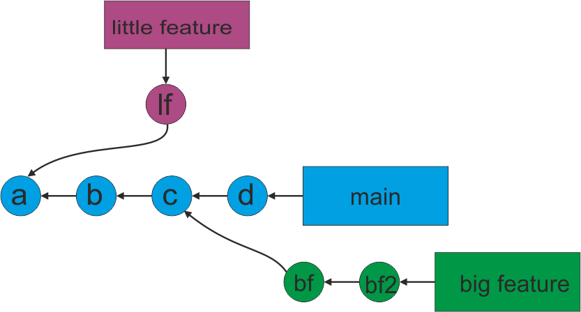

- Создать каталог и в нем репозиторий
cd "d:/step/github"
mkdir "d:/step/github/sample4"
cd "d:/step/github/sample4"
git init
echo "a" > file.txt
cat file.txt
git add file.txt
git status
git commit -m "a"
git ls-files
echo "b" > file.txt
cat file.txt
git commit -a -m "b"
echo "c" > file.txt
cat file.txt
git commit -a -m "c"
echo "d" > file.txt
cat file.txt
git commit -a -m "d"
git reflog
git checkout 685da36
git reflog
git branch little_feature
echo "lf" > file.txt
cat file.txt
git commit -a -m "lf"
git commit --amend -m "lf" (изменить message)
git checkout e6d68dd
git branch big_feature
echo "bf" > file.txt
git commit -a -m "bf"
echo "bf2" > file.txt
git commit -a -m "bf2"
git checkout master (вернуться в master)
git merge cf6b894 (конфликт)
(отредактировать файл)
git commit -a -m "v.1.1"
git merge 3e74a9e (конфликт)
(отредактировать файл)
git commit -a -m "v.1.1"